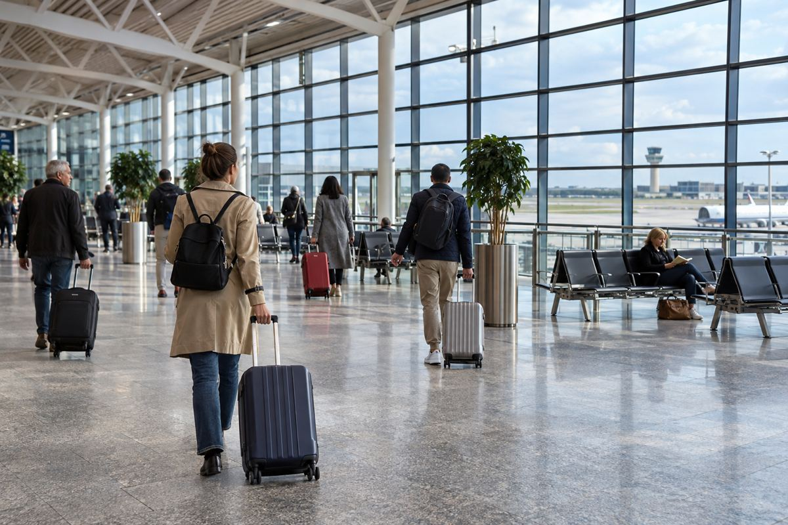

노선 재개 / EXPLAINED
PIA, 버밍엄–이슬라마바드 12월 1일 재개 계획…주 3회 직항
공항이 11월 3일 발표했다. 영국 출발은 화·목·토요일이며, 현지 시각과 도착 날짜를 따로 읽어야 한다.

파키스탄국제항공(PIA)이 버밍엄과 이슬라마바드를 잇는 직항을 12월 1일부터 재개할 계획이라고 버밍엄공항이 11월 3일 발표했다. 영국 출발은 화요일·목요일·토요일 주 3회이며 보잉 777을 투입한다고 안내했다. 발표일은 11월이고 운항 시작 예정일은 12월이다. 지금은 앞으로의 재개 일정이 확인된 단계로, 첫 비행이 이미 출발했다고 쓸 수는 없다.
미들랜즈에서 환승을 줄이는 연결
PIA는 파키스탄의 항공사이고, 버밍엄공항은 영국 미들랜즈 지역의 주요 공항이다. 공항은 지역에서 파키스탄까지 직접 연결하는 선택지가 다시 생긴다고 설명했다. 영국의 다른 공항까지 먼저 이동하거나 중간 도시에서 항공편을 갈아타던 사람에게는 비교 경로가 늘어난다. 특히 친지 방문은 현지에 머무는 기간과 가져가는 짐이 여행마다 달라, 단순한 비행시간뿐 아니라 출발 공항까지의 이동과 운임 조건을 함께 살펴야 한다.
공항은 2025년 버밍엄과 파키스탄 사이에 간접 연결편으로 이동한 양방향 승객이 17만8000명을 넘었다고 제시했다. 이 수치는 새 직항편의 예약 실적이 아니라 과거의 간접 이동 수요다. 또한 웨스트미들랜즈의 파키스탄계 인구가 32만명 이상이라는 배경을 들었다. 지역 거주 인구와 실제 항공 수요, 새 노선 탑승객은 각각 다른 기준이므로 같은 숫자로 취급하면 안 된다. 공항은 이 노선의 친지 방문 수요를 기대하지만 실제 이용률은 운항 후의 자료가 필요하다.
시간표의 두 줄을 왕복으로 읽기
공개된 편명은 이슬라마바드발 PK791과 버밍엄발 PK792다. 안내 시각은 각각 12시 15분 출발·16시 도착, 18시 30분 출발·7시 15분 도착으로 적혀 있다. 서로 다른 나라의 현지 시각을 단순히 빼면 실제 비행시간이 나오지 않는다. 특히 저녁 출발 뒤 아침 도착 여정은 예약 확인서에서 도착 날짜까지 확인해야 한다. 이 기사에서는 표에 생략된 날짜 표시를 임의로 확정하지 않았으며, 호텔이나 후속 교통은 실제 구매한 여정의 날짜를 기준으로 정해야 한다.
777이라는 기종명도 항공권의 모든 조건을 말해주지는 않는다. 같은 계열이라도 좌석 구성과 수하물, 식사, 변경·환불 규정은 판매 운임에 따라 달라질 수 있다. 공항 발표에는 개별 항공편의 최종 좌석 배치와 모든 판매 조건이 담겨 있지 않다. 기존 환승편과 비교할 때에는 왕복 총액에 필요한 짐과 좌석 선택을 맞추고, 직항이 주 3회라는 점이 출발·귀국 날짜에 주는 제약도 계산할 필요가 있다. 새 직항이라는 이유만으로 모든 여행에 가장 편리하다고 단정하기 어렵다.
이번 발표의 핵심은 영국 중부와 파키스탄 사이의 이동을 한 구간으로 연결할 예정이라는 점이다. 이 자체가 지역 생활권에는 의미가 있지만, 모든 국가 출발 여행자를 위한 새 환승 상품을 뜻하는 것은 아니다. 한국에서 두 나라를 묶어 방문하려면 구간별 입국과 예약 조건을 따로 확인해야 한다. 향후 확인할 지점은 12월의 실제 첫 운항과 판매 시간표의 변경 여부다. 11월 3일의 발표와 12월 1일의 예정 운항을 나눠 읽으면 현재 확정된 것과 앞으로 확인할 것이 분명해진다.